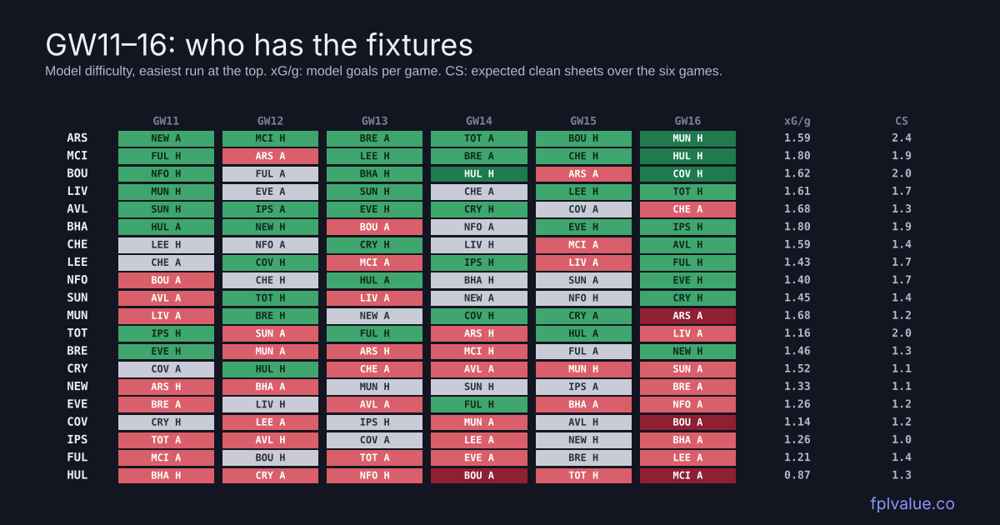

The GW11 break planner: fixtures, picks and sells
The GW11 deadline is Saturday 21 November at 11:00, so you have the international break to plan. The model has been updated with GW10, and this post covers the six fixtures after the break, the best players to buy for GW11–15, the popular players to move on, and the captaincy call. If you're wildcarding, our best wildcard teams post builds full £100m squads from the same numbers. For the bigger picture, read our review of the first ten gameweeks.

Who has the fixtures
The chart ranks every team's GW11–16 run by the model's average difficulty rating. It also shows the goals the model expects them to score per game and their expected clean sheets.
Arsenal have the best run, which is bad news for anyone hoping to get away without them. Every game is rated easy, and the model expects 2.4 clean sheets in six games, the most in the league. Their toughest game is City at home in GW12.
Bournemouth are third, behind City. The numbers rate them the third-best side in the league, and they now have Forest, Brighton, Hull and Coventry at home. Their GW15 trip to Arsenal is the only hard game.
Aston Villa get the biggest step up. Over the first ten games they averaged 1.38 xG for and 1.86 against. In GW11–14 they play Sunderland, Ipswich, Everton and Palace, and over the six games the model expects 1.68 for and 1.52 against. That's the biggest improvement on a team's season so far of anyone. Our review says Villa's results are ahead of their performances, so this is a reason to own Villa players for the schedule, not because of their form. N.Jackson (£7.1m, 22.4 points over GW11–15) is already in 31% of squads. McGinn (£5.4m, 20.7) is the cheaper way in.
At the other end, Hull have the worst run in the league by some distance: no fixture easier than a 4, and the model expects 0.87 goals a game. Keeper Tzolakis (13.5% owned) is a sell.
Newcastle start with Arsenal and Brighton, which is the moment to move on from Hall (18% owned, the 21st-best defender over the next five). Fulham, Ipswich, Coventry and Everton also have more red than green.
The best picks for GW11–15
These are the model's projected points over the next five gameweeks, with current prices and ownership.
| Player | Team | Price | Owned | GW11–15 |
|---|---|---|---|---|
| Goalkeepers | ||||
| Raya | ARS | £6.2m | 48% | 19.4 |
| Verbruggen | BHA | £4.6m | 24% | 17.4 |
| Kinsky | TOT | £4.4m | 16% | 16.8 |
| Defenders | ||||
| Gabriel | ARS | £8.1m | 26% | 27.0 |
| Van Hecke | TOT | £5.1m | 14% | 23.1 |
| De Cuyper | BHA | £5.5m | 48% | 22.6 |
| Silva | BOU | £5.1m | 4% | 21.6 |
| Konsa | ARS | £4.8m | 24% | 21.1 |
| Midfielders | ||||
| B.Fernandes | MUN | £11.6m | 20% | 28.2 |
| Mbeumo | MUN | £7.9m | 19% | 26.7 |
| Groß | BHA | £6.3m | 48% | 24.4 |
| Tavernier | BOU | £6.7m | 31% | 24.1 |
| Le Fée | SUN | £5.7m | 3% | 22.3 |
| Rudoni | COV | £4.9m | 1% | 21.3 |
| Forwards | ||||
| Haaland | MCI | £15.8m | 79% | 31.9 |
| Isak | LIV | £9.3m | 25% | 24.2 |
| Barry | EVE | £5.7m | 11% | 23.2 |
| N.Jackson | AVL | £7.1m | 31% | 22.4 |
| Calvert-Lewin | LEE | £6.0m | 18% | 22.3 |
Three picks stand out on price. Barry is the best-value forward in the game. He has the second-most xG in the league behind Haaland, he scored twice in GW10, and he projects only a point behind Isak for £3.6m less, even though Everton's fixtures are poor. Le Fée is the differential. He's owned by 3%, he's created 5.7 xG and xA in ten games, and Sunderland have been the unluckiest finishers in the league. Silva and Van Hecke are the defenders to pair with an Arsenal one. Both cost £5.1m.
A word on Fernandes. He tops the midfield list again, as he did before GW8. The model loves his chance creation and United's attacking numbers, but it has made him captain twice for 1 and 0 points, and his results haven't matched his projections all season. He's a reasonable buy if you have the money. He isn't a must-have, and Mbeumo gets you most of the same United attack for £3.7m less.
Who to sell
João Pedro is still flagged out with a thigh injury and no return date, and he's still in 32% of squads. The model has him at 1.8 points over the next five. Use the break to move him on, as we suggested before GW9. Thiago, the replacement we recommended then, is now suspended until 5 December, so he goes too if you need the transfer.
Cherki (34% owned) has scored 5 goals from 1.9 xG, the biggest overperformance in the game, and the model ranks him only 30th among midfielders for the next five weeks (18.6). He's the most popular player to sell on the numbers. Rogers (54%) is a softer case. He's 11th among midfielders (21.6), and some of his goals have been finishing luck, but he's fine to hold if you have nothing better to do with a transfer.
Gvardiol (23% owned) is a 75% flag with City's tough GW12 trip to Arsenal coming up, and he projects 14.7 over five. Hall and Tarkowski (19%) have poor fixtures and rank 21st and 16th among defenders.
The GW11 captain
Haaland at home to Fulham is the clearest pick of the season so far, at 6.9 expected points. The next best are Gabriel at Newcastle (5.6) and Isak at home to United (5.3). The review showed that Haaland hasn't been the week's top scorer once this season, but with 79% ownership and a home game against a side the model rates among the five weakest attacks, this isn't the week to look elsewhere.
Flags to watch during the break
Besides João Pedro, Saka and Semenyo are out with no return date. Gvardiol, Van Dijk and Guéhi are all 75% flags with unspecified injuries, and they're owned by 23%, 15% and 14% of managers. International games add their own risk. Check the flags again on the Thursday before the deadline, when most clubs have their players back. Transfers made now lose value if a price falls or a player picks up an international knock, so if you're only using your free transfer, wait until then.
Method: fixture difficulty, expected goals and clean-sheet odds come from the team model (data/current/fixture_model.csv), the same numbers as the fixture planner's Rating view, built on FPL xG through GW10. Projected points are from the projection model as of 10 November, with FPL's injury flags applied. Prices and ownership are as of 10 November. The numbers are generated by blog/planner.py.